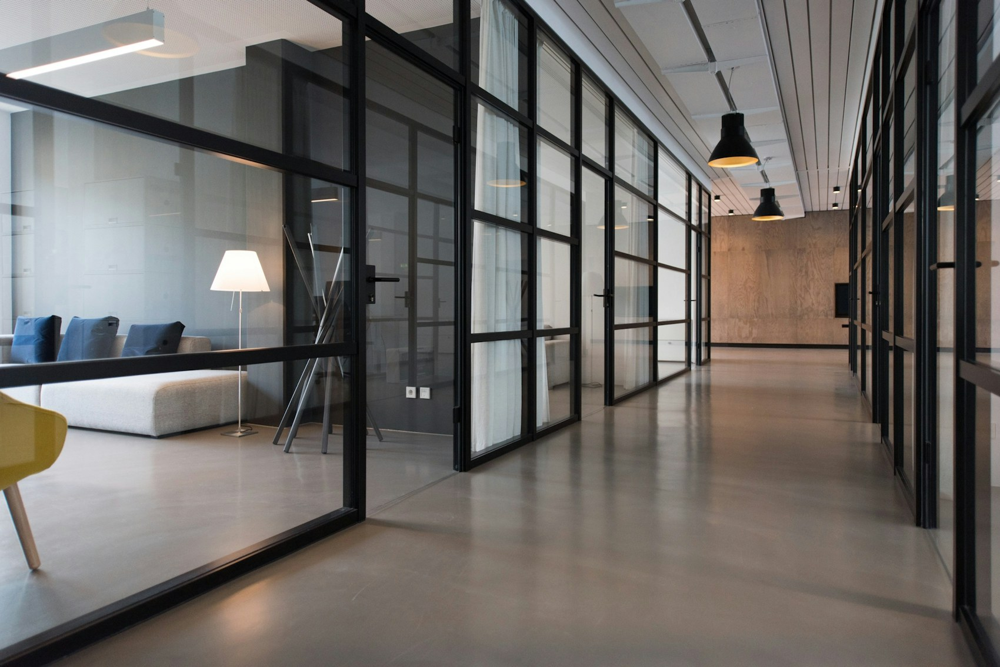
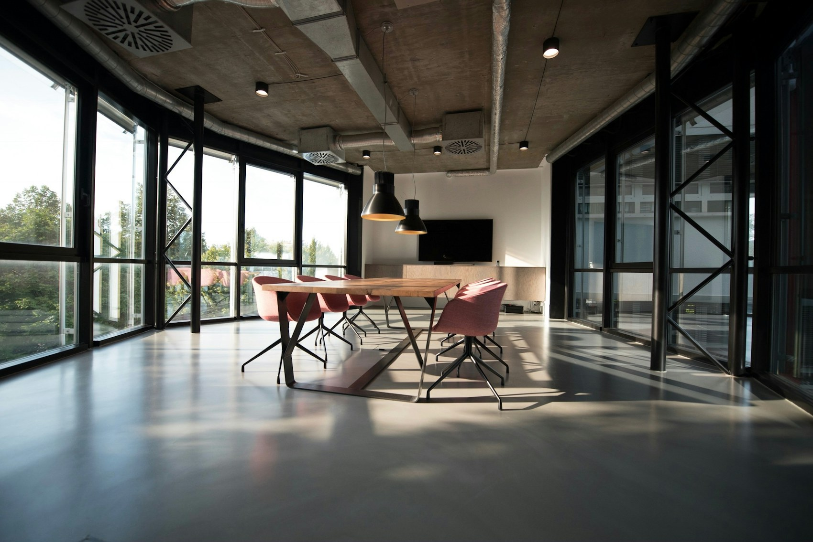

Irodák és intézmények
Irodaházak és intézmények napi takarítása, valamint nagytakarítása.
01LŐRE – B CLEAN KFT. · GYŐR
Irodától az ipari területig.
Rendszeres takarítás és nagytakarítás,
az Ön feladatához egyeztetve.

Helyet adunk
a mindennapoknak.
01 / SZOLGÁLTATÁSOK
A nyilvánosan megadott tevékenységek alapján. A gyakoriságot és a feladat pontos tartalmát közvetlenül egyeztetheti.
Irodaházak és intézmények napi takarítása, valamint nagytakarítása.
01Napi, heti vagy alkalomszerű takarítás társasházak számára.
02Ipari üzemek napi takarítása és nagytakarítása.
03Szállodák napi takarítása és nagytakarítása.
04Építkezés utáni nagytakarítás.
05Autószalonok napi takarítása és nagytakarítása.
0602 / A RÉSZLETEKBEN
Görgessen tovább.
A mozdulat nyomán
szabaddá válik a tér.

SZEMLÉLTETŐ ANIMÁCIÓ, NEM VALÓDI ELŐTTE–UTÁNA FELVÉTEL03 / KAPCSOLAT
Mondja el, hol és milyen gyakorisággal lenne szüksége takarításra. A részleteket telefonon vagy e-mailben egyeztetheti.
Írok az elképzelésemről ↗9026 Győr, Tábor utca 12.
Térkép megnyitása ↗Nyilvánosan megadott cím. Személyes felkeresés előtt egyeztessen.